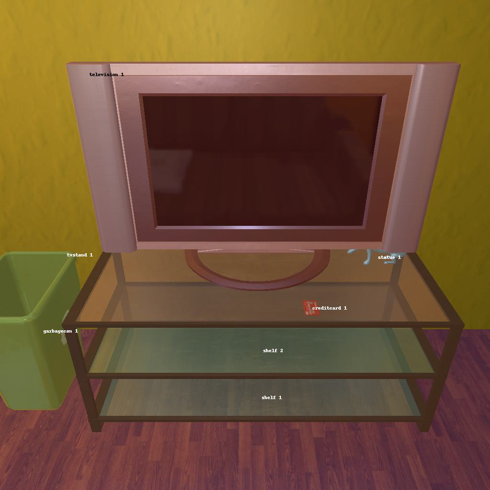

---------------------------------------------------------task: 3---------------------------------------------------------
--------------------------------------------------------------------------------------------------------------------------------------------------------------------
--------------------------------------------------------------------------------------------------------------------------------------------------------------------
Step:--------------------------------------------------------------------------4-------------------------------------------------------------------------------
----------------------------------------
VLM Prompt:
Image1:
Image2:
**Instruction**
1. Analyze the provided image to identify all visible household objects, focusing on those relevant to the task description "examine the plate with the floorlamp."
2. Use the analysis of the image and the task hint "The agent must find an object of the desired type, locate and turn on a light source with the desired object in-hand." to answer the question: what is the most reasonable action in the choices for the task description "examine the plate with the floorlamp"?
4. Decide and write the answer using the template: The answer is: (i): , where i is the real number. If there is no desired object in the image, search every place based on **Initial Observation** to find the object. And if no one is exactly correct, choose a similar answer.
**Initial Observation**
You are in the middle of a room. Looking quickly around you, you can see armchair (1), garbagecan (1), tvstand (1), shelf (1-5), sofa (1), coffeetable (1), sidetable (1-2), drawer (1)
**Answer Choices**
(1): go to armchair 1
(2): go to garbagecan 1
(3): go to tvstand 1
(4): go to sofa 1
(5): go to coffeetable 1
(6): go to sidetable 1
(7): go to sidetable 2
(8): go to drawer 1
(9): go to shelf 4
(10): go to shelf 5
(11): take statue 2 from shelf 3
(12): examine shelf 3
**Answer**
Let's think step by step by following the instructions.
----------------------------------------
----------------------------------------
Original Response:
Firstly, we need to identify all visible household objects in the provided images. In Image 1, we can see a television labeled "television 1" on top of a "tvstand 1." Below the television, there are two shelves labeled "shelf 1" and "shelf 2," with a "creditcard 1" visible on shelf 2. To the left of the TV stand, there is a "garbagecan 1." Next to the TV stand, there is a small "statue 1" visible.
In Image 2, we can see a door and a shelving unit with shelves labeled "shelf 3," "shelf 4," and "shelf 5."
Given the task description "examine the plate with the floorlamp," we must find an object of the desired type, which, in this case, would be a plate. However, no plate is visible in the provided images. The task hint suggests that we must find this object and then locate and turn on a light source with the desired object in-hand.
Since no plate is visible in the images, we must search every place based on the Initial Observation to find this object. The agent must go to places where a plate is likely to be found.
Based on common household organization, a plate is most likely to be found in a drawer or on a shelf. Therefore, the most reasonable actions from the choices provided would be to go to a drawer or a shelf.
The answer is: (8): go to drawer 1.
----------------------------------------
----------------------------------------
>>> Refine Original VLM Response and Get Pure Action: go to drawer 1
----------------------------------------
-----------------------------------------------------------------
Running time: 25.637704133987427 seconds
Total Money: 1.27748
-----------------------------------------------------------------
-----------------------------------------------------------------
Text Observation:You arrive at loc 9. The drawer 1 is closed.
-----------------------------------------------------------------
UNSUCCEED